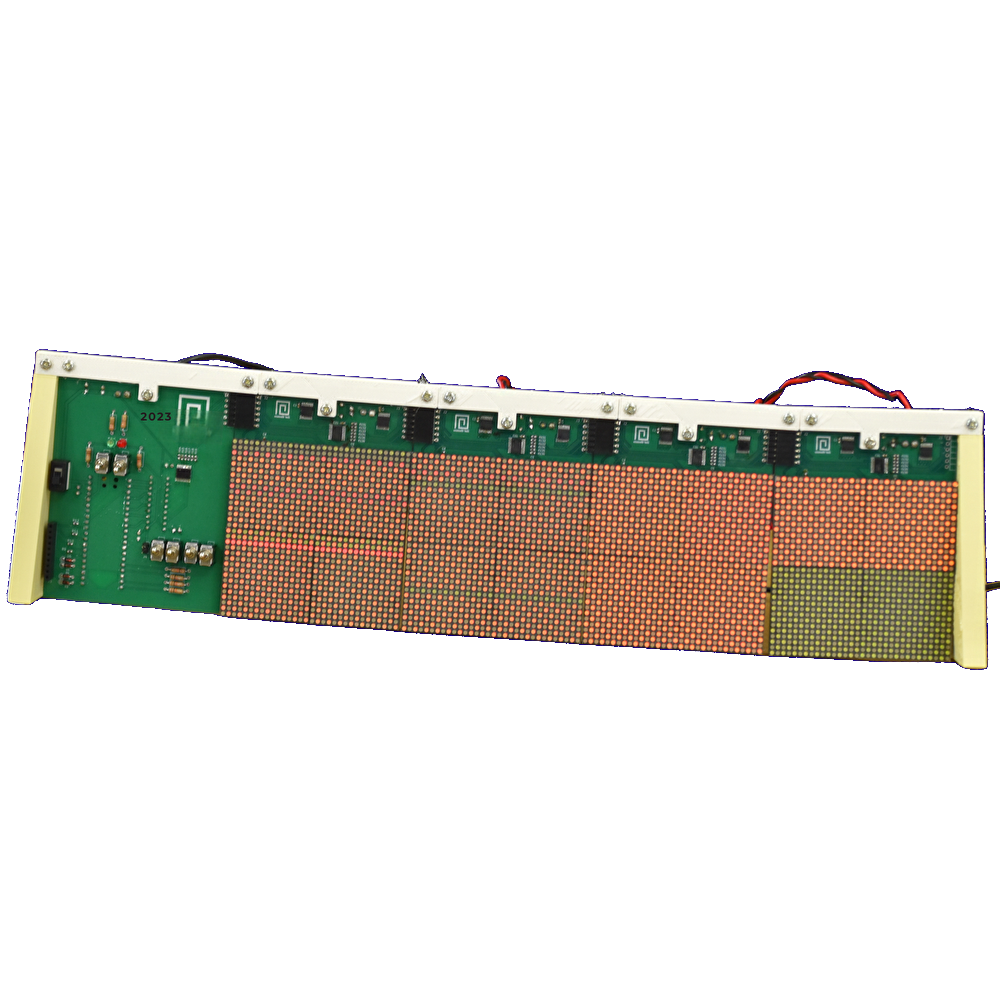

幻灯
古き良き3色

NO IMAGE
ハードウェアから制御プログラムまで、一から組み上げたオリジナルの電光掲示板。
レトロな3色LEDが放つ、独特の温かみと表現力をお楽しみください。
⚙️ SYSTEM SPEC
- 表示デバイス: 3色LEDドットマトリクスディスプレイ
- 制御基板: 自作設計回路基板
- ソフトウェア: オリジナル描画制御プログラム搭載
- 特徴: リアルタイムな文字列・アニメーション表示